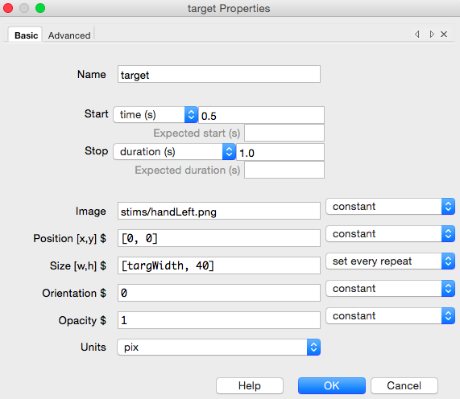

Overview
- Our study already works but we could make it nicer:
- improve the stimulus timing
- using images
- providing a ‘readme’ file
- Customise using code:
- add feedback
- conditions in branching
(Some of this is just an excuse to do unecessarily fancy stuff!)
Understanding timing and frame rates
So far we’ve used seconds to time our stimuli. This isn’t optimal (no, using ms wouldn’t help!)
Your screen doesn’t refresh constantly. It refreshes every 1/60th of a second (16.667 ms). You can only present your stimulus for integer multiples of that period. e.g:
- 200 ms duration = 12 frames
- 250 ms duration = 15 frames
- 210, 220, 230 ms durations = not possible!
By setting your time by seconds or ms it’s tempting to forget that this might not be exactly what you’re getting.
Understanding timing and frame rates
If your computer (graphics card) is really poor then the screen refresh doesn’t sync with the calls from the code. To test this we can go to the Coder View (in the view menu) and load the time-by-frames script in the demos.
Good timing looks like this:

Understanding timing and frame rates
Very short refresh: If frame times are less than your monitor refresh rate then the monitor is not synchronising to the screen refresh. You might be able to fix that by turning on “vsync” in the graphics card driver settings of your operating system (win/linux).
Occasional dropped frames: For a slow computer, or for very complex stimuli, you might “drop” frames. This occurs when the drawing copmutations that need to be done aren’t completed within the screen refresh duration. The graphics card then leaves the existing frame visible for an extra duration and draws your stimuli on the frame after (so that this one frame has the duration of exactly two).
Understanding timing and frame rates
For very brief stimuli you should probably use a set number of frames to time your stimuli. It forces you to think in terms of the monitor refresh period.
For long-duration stimuli this matters less, and you stand a higher chance of dropping frames, so using time might be more precise.
If you have studies that really need millisecond-precise timing (such as EEG) then buy a fast computer with a fast graphics card!
Be wary of any software package that simply tells you “sub-millisecond timing guaranteed”
Using images instead of text
- Our task could use images instead of text for the stimuli. Advantages:
- text ‘size’ is tricky:
- we can set letter height but that corresponds to the size of the font
- we don’t know how much of the font space ‘>’ occupies
- using images we can create non-textual versions of the task. e.g.:
- does it work the same for circles of different colours?
- does it work for faces with different expressions?
Using images instead of text
OK, let’s use an image file for our targets and distractors.
- We want something in most image formats but not:
- vector graphics (svg)
- animated gifs
Alpha (transparency) channels are supported.
- I’ll use a hand image from here:
- http://bit.ly/1JKKYbf
(this one is a png file)
Using images instead of text
Save your image with your experiment. I usually have a folder called ‘stims’ or ‘images’ next to my experiment folder and put all my images in there to keep things neat:
flankerTaskFolder
|── data
│ |── jwp_flankerText_2016_Jan_14_1513.csv
│ |── jwp_flankerText_2016_Jan_14_1513.log
│ |── jwp_flankerText_2016_Jan_14_1513.psydat
│ |── jwp_flankerText_2016_Jan_14_1514.csv
│ |── jwp_flankerText_2016_Jan_14_1514.log
│ |── jwp_flankerText_2016_Jan_14_1514.psydat
|── stims
│ |── handLeft.png
|── conditions.xlsx
|── flankerText_lastrun.py
|── flankerText.psyexp
Using images instead of text
- Filenames can be used just like anything else in PsychoPy:
- you can type them in manually
- you can put them in variables (e.g. Excel conditions file)
- Keep the filename relative:
- if it’s right next to the experiment file then just use the file name
- if the stims folder is next to the experiment then use ‘stims/myImage.png’
- avoid the full path (C:/Documents and Settings/jwp/…). What if you move your study?
Make sure you include the file extension (.jpg, .png, .bmp…). You may need to change the settings of the folder view to see it
Create a new version of our task
- Go to your flanker task in Builder and do >File>Save As… flankerImages
- In your trial routine delete the Text Component for your stimulus.
- Insert an Image Component into your trial
- name = target
- image = stims/handLeft.png
- start = 0.5 s
- duration = 1 s
- Run the task so you can see how it looks
Create a new version of our task
By default the size of the image will be whatever it was on the disk (in pixels).
For us that’s too big so we want to change it.
PsychoPy offers a variety of ‘units’ to specify our stimuli.
If you do specify the size then it doesn’t matter what size the image actually is (in either dimension) on disk. It will be stretched to fit the size you request.
Visual units on the monitor
When you specify units for a stimulus they apply to both the location and size, and possibly spatial frequency (for gratings).
In all units the centre of the screen is (0,0) in PsychoPy
Normalised units (the default):
Here, whatever size your screen is, the coordinates go from -1 (left, bottom) to +1 (right, top). So the screen is width=2, height=2
If your stimulus has size (0.5, 0.5) it will be 1/4 the width of the screen and 1/4 the height (the width is 2 and this is 0.5 so it’s 1/4 the width. Yes?)
Visual units on the monitor
Normalised units are convenient for demos because we know where the edges of the screen are automatically. For size they are a bit strange - square objects get converted to wide objects on a wide screen.
Height units:
Here the height of the screen is assigned the value of 1 and the width is given the scale to match that height.
So now top and bottom are at 0.5, -0.5 but the left and right locations depend on the aspect ratio of your screen.
But the nice thing is that now a size of (1,1) is a square that’s exactly the height of the screen
Visual units on the monitor
Pix: The number of pixels is easy to understand, but very much dependent on your screen (pixel sizes vary a lot).
Cm: If you tell PsychoPy how wide your screen is in cm then it can calculate stimulus sizes in cm too. Now you can go to a different screen and have the same stmiulus size automatically.
Deg: If you tell PsychoPy how wide your screen is (cm) and how away it is, PsychoPy can also use degrees of visual angle for stimulus size. This means the stimulus size is “device independent”.
To use cm and deg you need to open Monitor Center and set up your monitor, then you ALSO need to go to the Experiment Settings and make sure the screen is using that monitor name
Setting image size for our stimuli
For our study, let’s fetch that image for our target and flankers
Let’s size our stimulus in pixels (easy) and make it 80,40 (the original image was 625x320 pix)
Run your study. How does it look?
Now, change the size to be -80,40 and re-run. What happened?
Setting image size for our stimuli
- OK, one easy way to flip our image is to give it a negative size. For this study you could also:
- create another copy of the image in photoshop and set the image to change each trial
- rotate the image 180 deg (not quite the same thing but would result in a hand pointing right!)
- use the ‘flip’ option in the advanced section of the Image properties
For us, this time, negative size happens to be convenient
Setting image size for our stimuli
To make that flip occur on some trials and not others we need a variable in our conditions file.
Open your previous conditions and Save As… conditionsImages.xlsx
Instead of a column for stimulus we’ll now have a column called targWidth and one called distWidth and we’ll set those to be congruent or not:
targWidth distWidth corrAns congr 80 80 left 1 80 -80 left 0 -80 -80 right 1 -80 80 right 0
Setting image size for our stimuli
Now go back to your PsychoPy study and:
- Open the trials loop and update your loop to use the new conditions file
- Go to your target stimulus and set its size to be [targWidth, 40] and set it to set every repeat
- Create 4 Image components for your flankers:
- names = flank1, flank2, flank3, flank4
- sizes = [distWidth, 40] and set every repeat
- pos = [-180, 0], [-90, 0], [90, 0], [180,0]
Setting image size for our stimuli
Your target properties should now look like this
Setting image size for our stimuli
Your trial Routine should look like this:

For your units you can also alter the default for the entire experiment (that’s often a good idea). You can still override that per-stimulus
Static Intervals
That pink box, labeled “ISI”. What is it?
That isn’t actually doing anything in this experiment. It doesn’t cause an “interval” as the name implies. We could actually right-click the pink area and remove it and it would make no difference.
This is called a Static Component and we can use it to tell PsychoPy that in this period everything is static - we aren’t starting or stopping any stimulus. We can then use this to do time-consuming tasks without harming our timing.
The main thing it can be used for is loading images from disk, or potentially setting the text of a text Component. These operations can be time consuming. Rather than “set every repeat” we could select “set during trial:ISI”
Keyboards and button boxes
You might (or might not) have heard a lot about keyboards being poor for millisecond timing in experiments.
That’s true - if you want very precise response timing (e.g. to measure response-locked EEG) you probably need specialised hardware.
Then again ask yourself wether you need it. Usually the participant’s responses are much more variable than the lag/variability in keyboard latency.
Readme files
One of the lesser-known features of PsychoPy is its handling of README files
Simply place a text file called readme or readme.txt in the same folder as your experiment and it will appear every time you open that experiment.
Very useful for:
- keeping notes on development of your study
- providing reminders to yourself (“Turn on the speakers!”)
Ctrl-I will toggle the file on/off
Overall
There are a million ways to control your experiment in PsychoPy, from the very simple to the very fancy.
Remember the aim/mantra of ours, to be:
- intuitive enough for undergrads
- precise enough for psychophysics
- flexible enough for everything else
We can keep things easy if your study is easy, but as you make it more detailed and “unusual” you’ll need more coding skills.